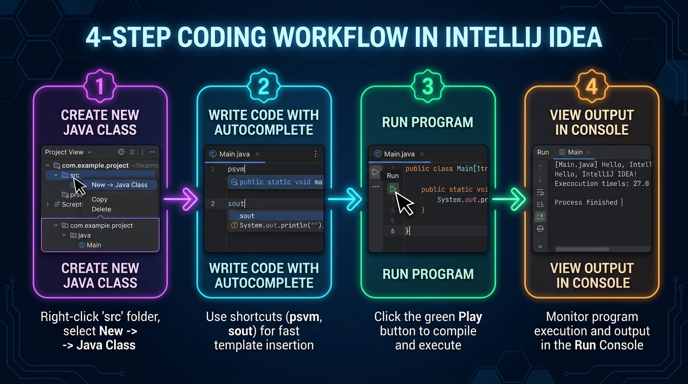
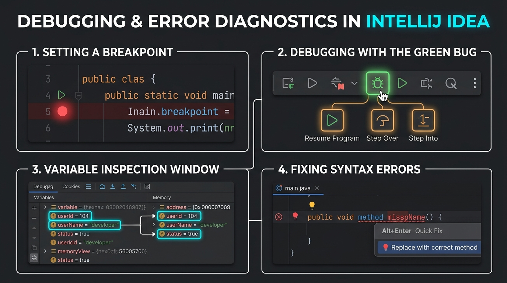
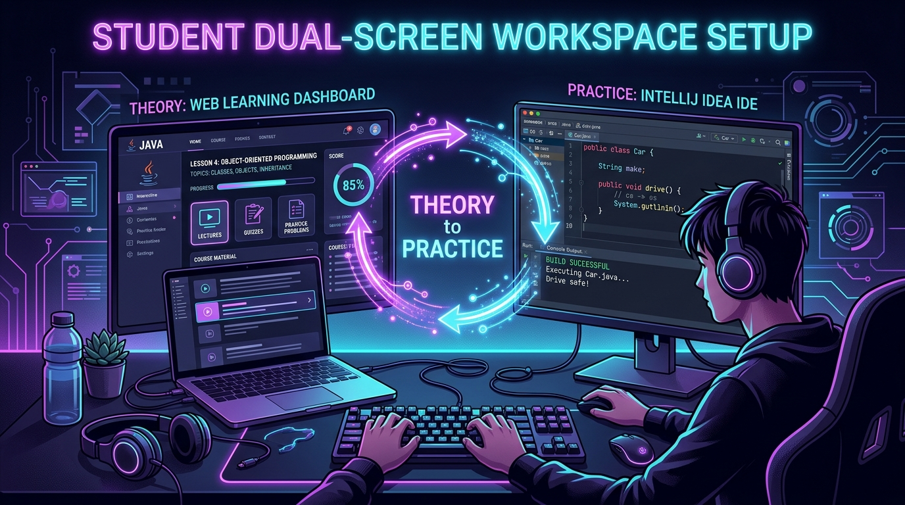

2. IntelliJ IDEA Master Navigation Map
Think of IntelliJ IDEA as an aircraft cockpit. While it may look full of controls at first glance, you only need to master 6 primary zones to write, test, and run your Java programs with complete ease.

Project Tool Window
Shortcut: Alt + 1 (Win) / Cmd + 1 (Mac)
Your file tree! Expand src/ to locate your packages and .java files. Double-click any file to open it in the Editor.
Central Code Editor
Focus: Esc (from any tool window)
The workspace where you write code. Features full syntax highlighting, intelligent tab navigation, line numbering, and bracket pairing.
Gutter Run Buttons
Action: Click green triangle ▶
Right next to public class or public static void main on the left margin, click the green play button to run that exact class immediately.
Top Navigation & Run Toolbar
Shortcut: Shift + F10 (Win) / Ctrl + R (Mac)
Shows the currently active class. Features the Hammer (Build), Green Play (Run), and Green Bug (Debug) buttons.
Bottom Run Console
Shortcut: Alt + 4 (Win) / Cmd + 4 (Mac)
Displays everything printed by System.out.println(), accepts keyboard typing if using Scanner, and shows compiler error logs.
Integrated Terminal
Shortcut: Alt + F12 (Win) / Option + F12 (Mac)
Built-in command line automatically opened in your project directory. Perfect for running git commands, javac, or batch scripts.
3. The 4-Step Coding Workflow in IntelliJ IDEA
Whenever you are asked to solve an in-class task, write an assignment, or try an experiment, follow this battle-tested 4-step sequence:

Step 1: Create a New Java Class
In the Project Tool Window (1), locate the src/ directory (or your session package like session01).
Right-click on src/ → New → Java Class.
Type your class name (e.g. MyFirstProgram) and press Enter.
Rule: Class names always start with a Capital Letter and use CamelCase!
Step 2: Write Code with Supercharged Autocomplete
Never type verbose Java boilerplate by hand! IntelliJ includes live templates that write standard code in milliseconds:
- Inside your class, type
psvmormainand press Tab → IntelliJ writespublic static void main(String[] args) {}automatically! - Inside your main method, type
soutand press Tab → IntelliJ writesSystem.out.println();with your cursor placed inside the parentheses!
Step 3: Run Your Program
Look at the left margin (the gutter) next to line 2 or 3 where your main method is defined.
Click the Green Play Button ▶ → Select Run 'MyFirstProgram.main()'.
Or use the universal keyboard shortcut: Ctrl + Shift + F10.
Step 4: View Output in the Run Console
The bottom Run Tool Window (5) will automatically pop open! Your output will display in crisp text:
Hello, IntelliJ IDEA! Welcome to Java.
Process finished with exit code 0Exit code 0 is your computer's way of giving you a thumbs up — it means your code ran from start to finish with zero crashes!
🚀 Pro-Tip: IntelliJ Live Template Cheat Sheet
| Type This | Press | What IntelliJ Generates For You |
|---|---|---|
psvm or main |
Tab | public static void main(String[] args) { } |
sout |
Tab | System.out.println(); |
souf |
Tab | System.out.printf(""); |
soutv |
Tab | Prints current variable name and its value (e.g. System.out.println("x = " + x);) |
fori |
Tab | Standard for (int i = 0; i < ...; i++) { } loop |
iter |
Tab | Enhanced for-each loop over the nearest array or collection |
4. Visual Debugging & Diagnosing Errors
Every software engineer writes bugs. The difference between a frustrated beginner and a 10x developer is knowing how to use the Debugger and reading IntelliJ's diagnostic hints.

The 4 Debugging Capabilities Every Student Needs
Setting a Breakpoint
Click directly on the gutter space next to a line number. A bright red circle will appear. This tells the JVM: "Freeze the program right before this line executes!"
Running with the Green Bug
Click the Bug Icon 🐞 (Shift + F9). The program runs at full speed until it hits your red breakpoint, then pauses so you can inspect time itself.
Inspecting Variables in Memory
Look at the bottom Variables Panel. You can see the exact values stored in your variables (e.g., userId = 104, status = true) without needing dozens of print statements!
Fixing Red Squigglies (Alt + Enter)
A red squiggly line means IntelliJ found a syntax error before compiling! Hover over the red line and press Alt + Enter (Option+Enter on Mac) to view instant AI & IDE quick-fixes!
Once paused on a breakpoint, look at the debugger toolbar:
- Step Over (F8): Executes the current line and advances to the next line.
- Step Into (F7): Dives inside the method being called on that line.
- Resume Program (F9): Continues normal execution until the next breakpoint is hit.
5. The Ideal Dual-Screen Student Study Setup
How do top engineers learn so rapidly? They bridge theory and practice in real time!

If you do not have an external monitor, you can snap windows perfectly in 2 seconds:
- Windows 10 / 11: Click your browser window → Press Win + Left Arrow. Click IntelliJ → Press Win + Right Arrow.
- macOS: Hover your mouse over the green full-screen button in the top left corner of the window → Choose "Tile Window to Left of Screen" → Select IntelliJ for the right side.
6. Essential Keyboard Shortcuts Reference
Keyboard mastery saves hours of repetitive mouse movements. These 10 shortcuts will give you developer superpowers:
| Action | Windows / Linux | macOS | Why You Need It |
|---|---|---|---|
| Run Current File | Ctrl + Shift + F10 | Ctrl + Shift + R | Runs the Java file currently open in your editor |
| Rerun Last Class | Shift + F10 | Ctrl + R | Executes your previously run configuration |
| Debug Current File | Shift + F9 | Ctrl + D | Starts execution with active breakpoints |
| Reformat Code | Ctrl + Alt + L | Cmd + Option + L | Instantly cleans up ugly indentation & spacing! |
| Show Context Actions (Quick Fix) | Alt + Enter | Option + Enter | Fixes compiler errors, auto-imports missing packages |
| Search Everywhere | Double Shift | Double Shift | Find any class, file, or setting in the entire project |
| Toggle Project View | Alt + 1 | Cmd + 1 | Hides/Shows the left folder sidebar for more coding space |
| Open Built-in Terminal | Alt + F12 | Option + F12 | Opens command line directly in the project folder |
| Comment / Uncomment Code | Ctrl + / | Cmd + / | Quickly toggles // on selected lines |
| Duplicate Current Line | Ctrl + D | Cmd + D | Copies current line or selection directly below |
7. Beginner Troubleshooting FAQ: "Why Did This Happen?"
Cause: Either you forgot the exact main method signature, or IntelliJ doesn't recognize your folder as a Sources Root.
Solution:
1. Verify your main method signature is exact: public static void main(String[] args).
2. Look at your src folder in the Project view. It should have a blue folder icon. If it is yellow or grey, right-click on src → Mark Directory as → Sources Root.
Cause: IntelliJ does not know which JDK version to use.
Solution:
Press Ctrl + Alt + Shift + S (Win) or Cmd + ; (Mac) to open Project Structure. Under Project → SDK, select your installed JDK (e.g. temurin-25). Click Apply and OK.
Cause: The bottom tool window was accidentally closed or minimized.
Solution:
Press Alt + 4 (Win) or Cmd + 4 (Mac), or click View → Tool Windows → Run in the top menu bar.
Cause: Your program is waiting for YOU to type input!
Solution:
Click your mouse inside the bottom Run Console window, type your response, and press Enter.